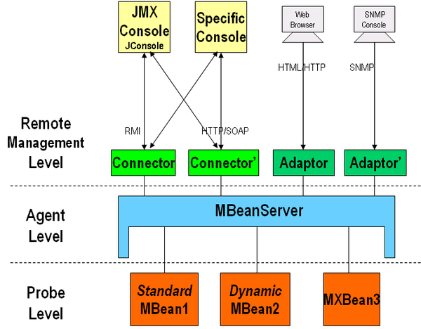
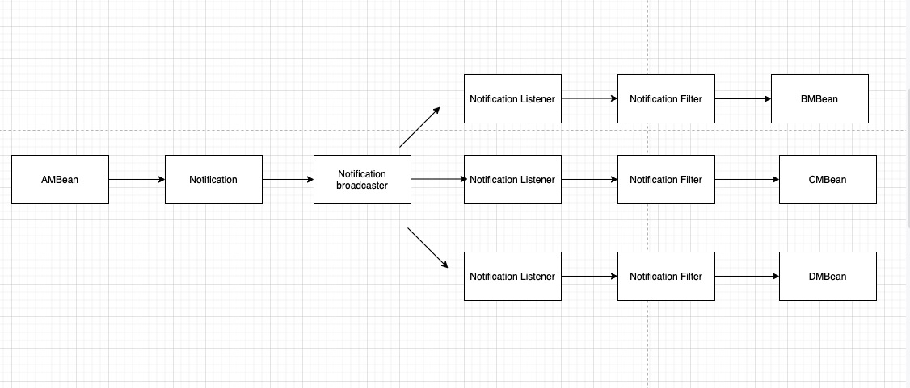

JMX - Java Management Extension
目录：
1.什么是jmx
所谓JMX，是Java Management Extensions(Java管理扩展)的缩写，是一个为应用程序植入管理功能的框架。用户可以在任何Java应用程序中使用这些代理和服务实现管理。
2.jmx架构

JMX架构分为三层，分别是Probe level层，Agent层，Remote Management层。其中Probe Level层主要管理MBean。Agent层主要定义了各种服务以及通信模型，和需要被管理的资源在同一机器上，核心模块是MBean Server，所有的MBean都要向它注册，才能被管理。注册在MBeanServer上的MBean并不直接和远程应用程序进行通信，他们通过协议适配器（Adapter）和连接器（Connector）进行通信。也叫Remote Management Layer. 即远程管理层。MBean Server依赖于该层的协议适配器（Adaptor）和连接器（Connector），让JMX Agent可以被该JVM外面的管理系统远程访问。支持多种协议：SNMP，HTML，RMI.
MBean分类
- Standard MBean
- MXBean
- Dynamic MBean
- Open MBean
- Module MBean
MBean规范
- A set of readable or writable attributes, or both.
- A set of invokable operations.
- A self-description.
- 管理接口贯穿于MBean的整个生命周期，并且是不变的。Mbean在某些预先定义的事件发生时可以发出通知（Notifications）。
Standard MBean规范
- 接口必须以MBean结尾，如HelloMBean
- 其中实现类名字必须为Hello
- 接口和实现类必须在同一个包下
public interface HelloMBean {
void sayHello();
void setValue(int i);
int getValue();
}
public class Hello implements HelloMBean{
private int value;
public void sayHello(){}
public void setValue(int value){
this.value = value
}
public int getValue(){
return value;
}
}
注册MBean
MBeanServer server = ManagementFactory.getPlatformMBeanServer();
ObjectName helloName = new ObjectName("jmxBean:name=hello");
//create mbean and register mbean
server.registerMBean(new Hello(), helloName);
Thread.sleep(60*60*1000);
1、 通过工厂类获取Mbean Server，用来做Mbean的容器
2、 ObjectName的取名规范：域名:name=Mbean名称，其中域名和Mbean的名称可以任取。这样定义后，我们可以唯一标示我们定义的这个Mbean的实现类了
3、最后将Hello这个类注册到MbeanServer中，注入需要创建一个ObjectName类，我们可以用jdk自带的Jconsole用来观察，可以设置属性值和调用相关方法。
Notification
MBean之间的通信是必不可少的，Notification起到了在MBean之间沟通桥梁的作用。JMX 的通知由四部分组成：
1、Notification这个相当于一个信息包，封装了需要传递的信息
2、Notification broadcaster这个相当于一个广播器，把消息广播出。
3、Notification listener 这是一个监听器，用于监听广播出来的通知信息。
4、Notification filiter 这个一个过滤器，过滤掉不需要的通知

MBean之间的通信类似与MQ(message queue)，其中Notification作为消息被braodcaster进行广播，然后被相应的Listener坚挺，执行真正MBean的逻辑前会有Filter进行过滤。
例子如下：
定义MBean
package jmx;
public interface JackMBean
{
public void hi();
}
发送Notification
package jmx;
import javax.management.Notification;
import javax.management.NotificationBroadcasterSupport;
public class Jack extends NotificationBroadcasterSupport implements JackMBean
{
private int seq = 0;
public void hi()
{
//创建一个信息包
Notification notify =
//通知名称；谁发起的通知；序列号；发起通知时间；发送的消息
new Notification("jack.hi",this,++seq,System.currentTimeMillis(),"jack");
sendNotification(notify);
}
}
定义Listener
package jmx;
import javax.management.Notification;
import javax.management.NotificationListener;
public class HelloListener implements NotificationListener
{
public void handleNotification(Notification notification, Object handback)
{
if(handback instanceof Hello)
{
Hello hello = (Hello)handback;
hello.printHello(notification.getMessage());
}
}
}
修改Agent
package jmx;
import java.lang.management.ManagementFactory;
import javax.management.JMException;
import javax.management.MBeanServer;
import javax.management.ObjectName;
public class HelloAgent
{
public static void main(String[] args) throws JMException, Exception
{
MBeanServer server = ManagementFactory.getPlatformMBeanServer();
ObjectName helloName = new ObjectName("yunge:name=Hello");
Hello hello=new Hello();
server.registerMBean(hello, helloName);
Jack jack = new Jack();
server.registerMBean(jack, new ObjectName("jack:name=Jack"));
jack.addNotificationListener(new HelloListener(), null, hello);
Thread.sleep(500000);
}
}
利用jconsole调用jack的hi方法，这里当jack发出消息后，Notification被广播至所有的MBean，当有MBean属于Hello类时则调用Hello的printHello()方法。
JMX环境变量
-Dcom.sun.management.jmxremote=true 相关 JMX 代理侦听开关
-Djava.rmi.server.hostname 服务器端的IP
-Dcom.sun.management.jmxremote.port=29094 相关 JMX 代理侦听请求的端口
-Dcom.sun.management.jmxremote.ssl=false 指定是否使用 SSL 通讯
-Dcom.sun.management.jmxremote.authenticate=false 指定是否需要密码验证
3.spring集成jmx
思想：spring通过annotation暴露MBean
涉及到三个重要的annotation：@ManagedResource @ManagedAttribute 和 @ManagedOperation。
| 将类的所有实例标识为JMX受控资源 | ManagedResource |
@ManagedResource |
Class 类 |
| 将方法标识为JMX操作 | ManagedOperation |
@ManagedOperation |
Method方法 |
| 将getter或者setter标识为部分JMX属性 | ManagedAttribute |
@ManagedAttribute |
Method (only getters and setters) 方法（仅getters和setters） |
| 定义操作参数说明 | ManagedOperationParameter |
@ManagedOperationParameter和@ManagedOperationParameters |
Method 方法 |
例子如下:
@ManagedResource (objectName= "bean:name=lionbuleTest" , description= "My Managed Bean" )
public class AnnotationTestMBean{
private String name;
private int age;
@ManagedAttribute(description="The Name Attribute")
public void setName(String name) {
this.name = name;
}
@ManagedAttribute()
public String getName() {
return name;
}
public int getAge() {
return age;
}
public void setAge(int age) {
this.age = age;
}
@ManagedOperation(description="Add two numbers")
@ManagedOperationParameters({
@ManagedOperationParameter(name = "x", description = "The first number"),
@ManagedOperationParameter(name = "y", description = "The second number")})
public int add_1(int x, int y) {
return x + y;
}
@ManagedOperation
public int add_2(int x, int y){
return x + y;
}
public void dontExposeMe() {
throw new RuntimeException();
}
}
思考：Spring怎么实现的这个功能
答：MBean规范规定接口必须以MBean结尾，而通过Spring注解导出的MBean则不需要遵守这个规范；原因是(我个人猜测)通过生成代理，让代理实现MBean的规范，然后把自定义的Bean的逻辑织入进入就可以了。
6.jmx应用场景
JMX是一种JAVA的正式规范，它主要目的是让程序有被管理的功能。
那么怎么理解所谓的“被管理”呢？试想你开发了一个软件（如ＷＥＢ网站），它是在２４小时不简断运行的，那么你可能会想要“监控”这个软件的运行情况，比如收到了多少数据，有多少人登录等等。或者你又想“配置”这个软件，比如现在访问人数比较多，你想把数据连接池设置得大一些；每天的UV、PV是多少；又或者在业务高峰的期间，你想对接口进行限流，就必须去修改接口并发的配置值。
应用场景：中间件软件WebLogic的管理页面就是基于JMX开发的，而JBoss则整个系统都基于JMX构架。
对于一些参数的修改，网上有一段描述还是比较形象的：
1、程序初哥一般是写死在程序中，到要改变的时候就去修改代码，然后重新编译发布。
2、程序熟手则配置在文件中（JAVA一般都是properties文件），到要改变的时候只要修改配置文件，但还是必须重启系统，以便读取配置文件里最新的值。
3、程序好手则会写一段代码，把配置值缓存起来，系统在获取的时候，先看看配置文件有没有改动，如有改动则重新从配置里读取，否则从缓存里读取。
4、程序高手则懂得物为我所用，用JMX把需要配置的属性集中在一个类中，然后写一个MBean，再进行相关配置。另外JMX还提供了一个工具页，以方便我们对参数值进行修改。
---- 上面这些话就是JMX的场景；动态、运行期配置是JMX的一个特点
5.参考资料
1.https://docs.oracle.com/javase/tutorial/jmx/mbeans
2.https://blog.csdn.net/flsmgf/article/details/78758997